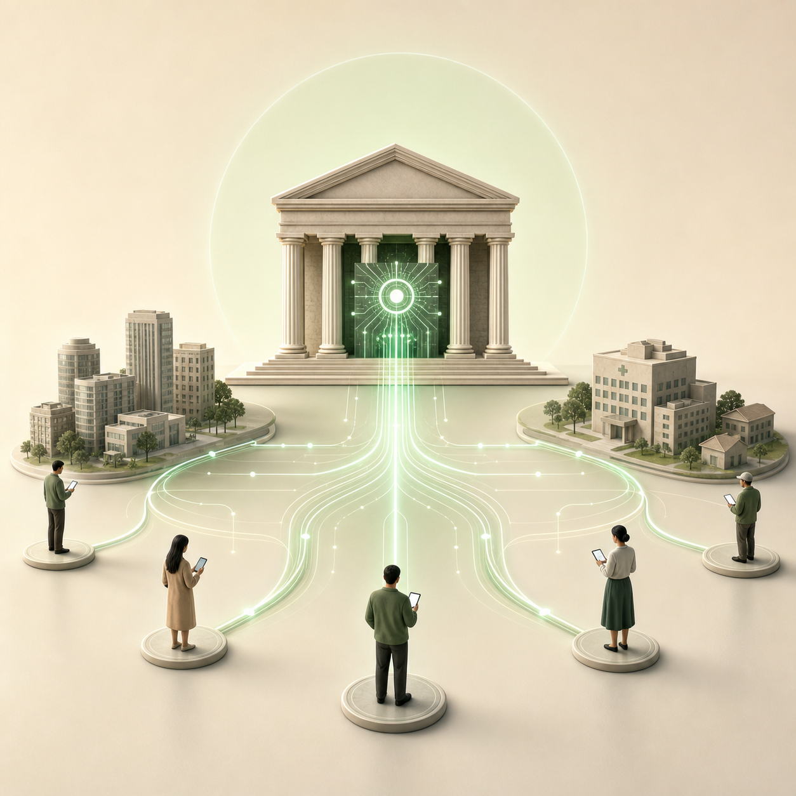

หน้านี้ต้องอธิบายให้ผู้เรียนเข้าใจว่าทำไมรัฐจึงมอง CBDC เป็นพัฒนาการต่อเนื่องของระบบเงินปัจจุบัน ไม่ใช่ของแปลกที่หลุดมาจากอนาคต
นิยาม CBDC ด้วยภาษาง่ายและชัด
ให้ผู้เรียนเห็นก่อนว่าทำไมฝั่งรัฐจึงมองว่ามันน่าสนใจ
ถ้ามองไปข้างหน้า สิ่งที่หลายรัฐบาลกำลังสนใจมากขึ้นก็คือ CBDC หรือ Central Bank Digital Currency
พูดแบบง่ายที่สุด มันคือเงินดิจิทัลที่ออกโดยธนาคารกลางโดยตรง
ในมุมของรัฐ มันอาจถูกนำเสนอว่า ช่วยให้ระบบมีประสิทธิภาพขึ้น ตามเงินได้ดีขึ้น และส่งนโยบายถึงประชาชนได้ตรงขึ้น
นี่คือทั้งสไลด์ปิด Unit 15 และสไลด์ปิด Chapter 2 จึงต้องมอง CBDC ในฐานะปลายทางล่าสุดของเส้นเรื่องเรื่องเงินและอำนาจทั้งหมด
ทำให้ผู้เรียนไม่มอง CBDC แยกขาดจากประวัติศาสตร์เงินก่อนหน้า
สรุป chapter ว่าความสะดวกที่เพิ่มขึ้นในแต่ละยุค มักมากับการรวมศูนย์ของอำนาจมากขึ้นด้วย
เพราะฉะนั้น เวลาพูดถึง CBDC เราจึงไม่ได้พูดถึงแค่เทคโนโลยีใหม่ แต่กำลังพูดถึงอนาคตของความสัมพันธ์ระหว่างประชาชนกับอำนาจทางการเงินด้วย
ถ้าเงินเชื่อมกับศูนย์กลางโดยตรง ความสามารถในการติดตาม การตั้งเงื่อนไข หรือการจำกัดการใช้ก็อาจทำได้ง่ายขึ้นมาก
และถ้ามองย้อนทั้ง Chapter นี้ เราจะเห็นว่า เงินค่อย ๆ เดินจากวัตถุที่ผู้คนถือเองได้ ไปสู่ระบบที่สะดวกขึ้น แต่รวมศูนย์อำนาจมากขึ้นเรื่อย ๆ นี่คือคำถามที่พาเราไปต่อบทถัดไป